# Some data for plotting
x = [0, 1, 2, 3, 4, 5, 6]
y_1 = [0, 2, 4, 6, 8, 10, 12]
y_2 = [0, 3, 6, 9, 12, 15, 18]
# Lets start plotting
plt.plot(x, y_1, label='Y1 values', color='red', linestyle='dashed')
plt.plot(x, y_2, label='Y2 values', color='blue')
plt.xlabel('x-values')
plt.ylabel('y-values')
plt.title('X vs Y')
plt.grid(alpha=.25)
plt.legend(loc='upper left')Plotting (Need)

Matplotlib unleashed! (Image from Python Data Visualization with Matplotlib — Part 1)
What to expect in this chapter
In this chapter, I will show you how to generate high-quality, publication-ready plots using Python. You can readily use this knowledge in your other modules (for example, when writing reports for your experiments). There are many packages (e.g., Matplotlib, Plotty, Seaborn, Bokeh, Folium) that you can use to plot with Python. Of these, Matplotlib is the most popular and most versatile. Since some other packages are built using Matplotlib, it is usually good to know your way around Matplotlib first.
Before proceeding…
Ensure you are familiar with using Lists and NumPy arrays.
Install the Matplotlib package using
conda.conda install matplotlib -c conda-forgeImport Matplotlib using the following.
from matplotlib import pyplot as plt
1 A simple plot
1.1 Let’s look at some code.
Shown below is some code and the resulting plot.
# Some data for plotting
x = [0, 1, 2, 3, 4, 5, 6]
y_1 = [0, 2, 4, 6, 8, 10, 12]
y_2 = [0, 3, 6, 9, 12, 15, 18]
# Let's start plotting
plt.plot(x, y_1, label='Y values',
color='red', linestyle='dashed')
plt.xlabel('x-values')
plt.ylabel('y-values')
plt.title('X vs Y')
plt.grid(alpha=.25)
plt.legend(loc='upper left')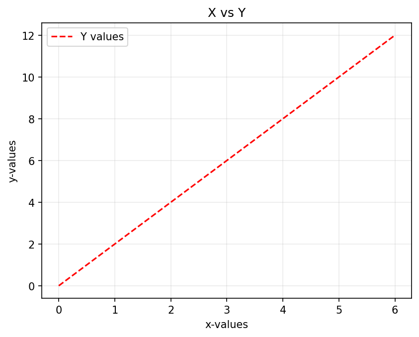
Copy, paste, and run this code snippet to generate the plot. Then, spend a few minutes perusing the code to figure out what each line achieves in the plot. A simple way to do this is by commenting out some lines to turn off their contributions or changing some parameters (e.g., loc to bottom left) and numbers (e.g., alpha to .8). It will help you learn faster if you try to predict what will happen before running the code.
Things to note
- You can use the following abbreviations if you like:
| Long form | Abbreviation |
|---|---|
color |
c |
linestyle |
ls |
linewidth |
lw |
so, both the following lines produce the same result.
plt.plot(x, y, color='red', linestyle='dashed', linewidth=2)plt.plot(x, y, c='red', ls='dashed', lw=2)- Jupyter is an interactive environment, so you will see an output even if you omit
plt.show(). However, it is good practice to include this line anyway so your code will also work in non-interactive environments (for instance, when the script is run directly from the command line).
The plotting functions usually have default values for the styling parameters. So, if you wish, you can keep it simple and plot just using:
plt.plot(x, y_1, y_2)The resulting plot is shown alongside.
You can split the arguments into separate lines to improve readability.
So, both of the following forms are acceptable.
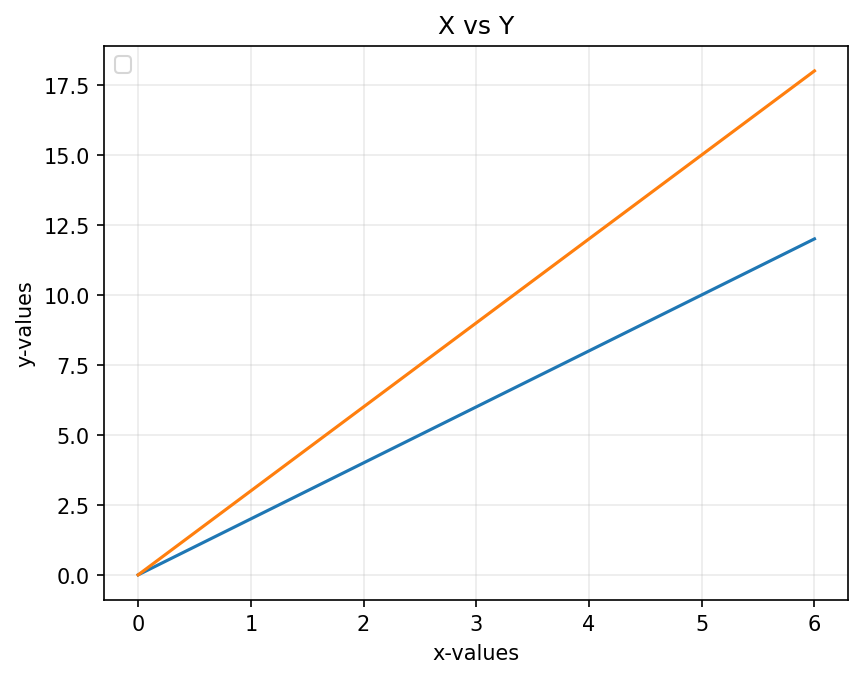
plt.plot(x, y, color='red', linestyle='dashed', linewidth=2)plt.plot(x, y_1, label='Y values',
color='red', linestyle='dashed')- The order of how you specify the keyword arguments (
color,linewidth, …) does not matter.
1.2 Adding another plot
You can add another plot command to the graph to plot the data of y_2 in blue by adding the following line.
plt.plot(x, y_2,
label='Y2 values', color='blue')Once you do this, the code will look like this:
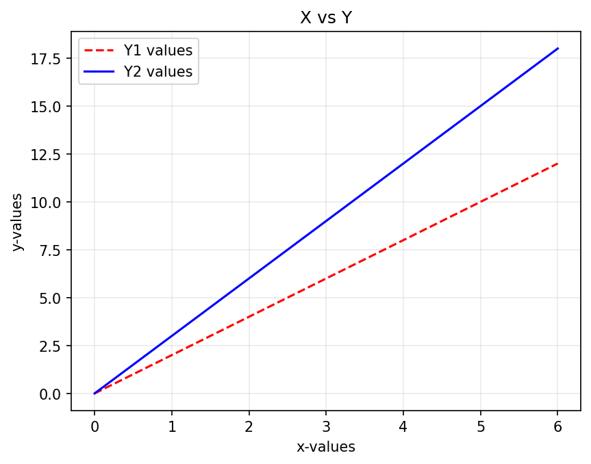
1.3 Yet another plot but with error bars
Let me add another plot, but this time I will also include \(x\) and \(y\) error bars for the points. The plotting command I need to use for this is called errorbar().
plt.errorbar(x, y_3,
xerr=x_error, yerr=y_error,
label="Y3 with errors",
color="green")Once you do this, the code will look like this:
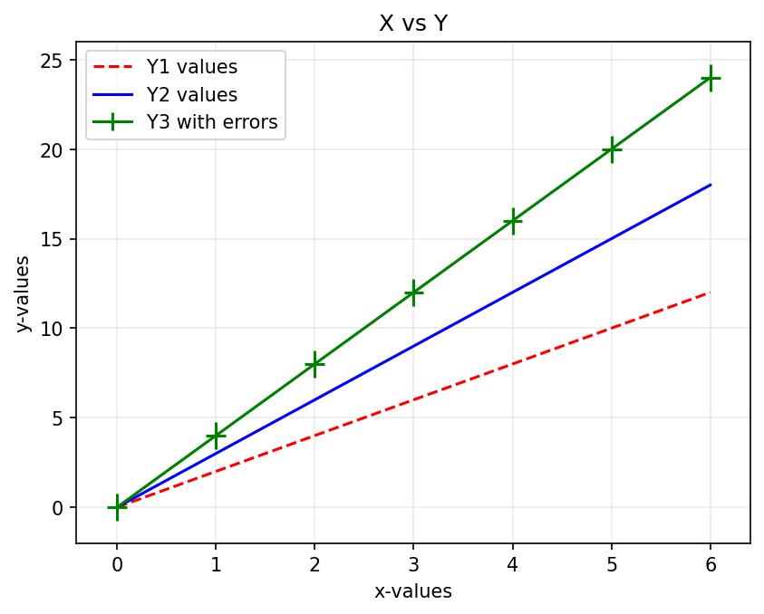
# Some data for plotting
x = [0, 1, 2, 3, 4, 5, 6]
y_1 = [0, 2, 4, 6, 8, 10, 12]
y_2 = [0, 3, 6, 9, 12, 15, 18]
y_3 = [0, 4, 8, 12, 16, 20, 24]
x_error, y_error = .1, 0.75
# Lets start plotting
plt.plot(x, y_1, label='Y1 values', color='red', linestyle='dashed',)
plt.plot(x, y_2, label='Y2 values', color='blue', )
plt.errorbar(x, y_3, xerr=x_error, yerr=y_error,
label='Y3 with errors', color='green')
plt.xlabel('x-values')
plt.ylabel('y-values')
plt.title('X vs Y')
plt.grid(alpha=.25)
plt.legend(loc='upper left')In this example, I have provided constant errors for all the points. However, you can also provide a list of errors so that each will have a different length.
Please note
From here onwards, I will show a minimum of code related to styling to reduce clutter. You should, however, still retain them to get nice-looking plots.
2 Better with NumPy
Often, it is easier to use NumPy arrays instead of Python lists. So, let’s first convert the Python lists into NumPy arrays and then redo the plot in the previous step.
# Some data for plotting
x = [0, 1, 2, 3, 4, 5, 6]
y_1 = [0, 2, 4, 6, 8, 10, 12]
y_2 = [0, 3, 6, 9, 12, 15, 18]
np_x = np.array(x)
np_y_1 = np.array(y_1)
np_y_2 = np.array(y_2)
plt.plot(np_x, np_y_1, color='red', linestyle='dashed', label='Y values')
plt.plot(np_x, np_y_2, color='blue', label='Y2 values')You must wait until the next step to see why NumPy is better.
2.1 Adding mathematical functions
One of the advantages of NumPy arrays is that they allow us to generate data-related mathematical functions easily. Let’s reuse our previous code to plot \(x^2\) and \(\sin(x)\)
x = np.array([0, 1, 2, 3, 4, 5, 6])
x2 = x**2 # The math stuff
sin_x = np.sin(x)
plt.plot(x, x2, label='x^2',
color='red', linestyle='dashed', )
plt.plot(x, sin_x, label='sin(x)',
color='blue')
plt.legend() 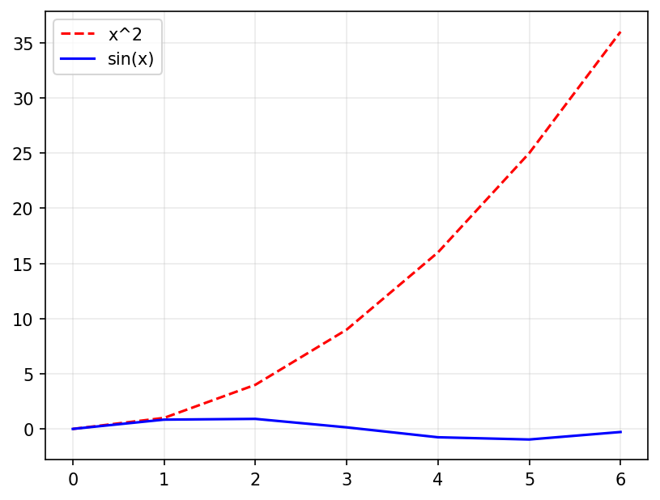
Alas, our plot does not look good because \(\sin(x)\) lies between \(\pm 1\), but \(x^2\) has no such bounds. One way to fix this is to add another y-axis that shares the same x-axis.
We need another axis!
Matplotlib offers a variety of ways to have multiple axes. The simplest way is to have another y-axis that shares the same x-axis. We can use the command twinx() for this.
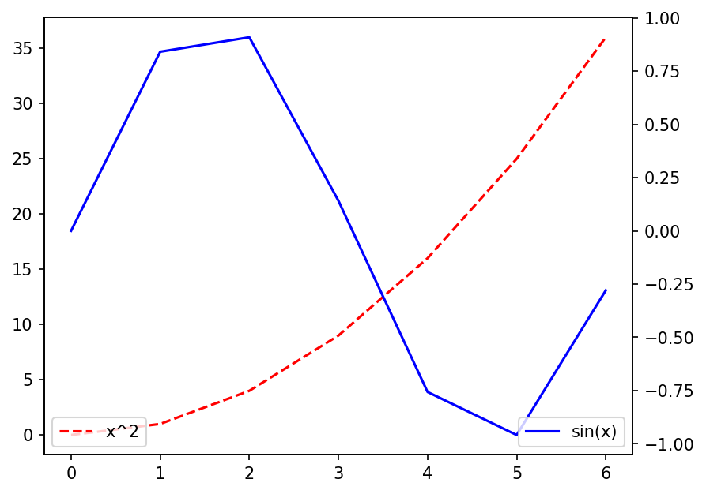
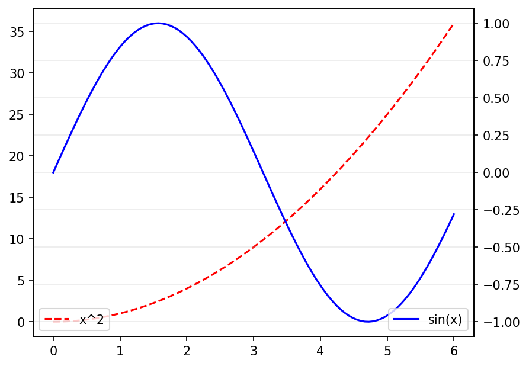
np.linspace().
x = np.array([0, 1, 2, 3, 4, 5, 6])
x2 = x**2
sin_x = np.sin(x)
plt.plot(x, x2, label='x^2',color='red', linestyle='dashed')
plt.legend(loc='lower left') # For y-axis 1
plt.twinx() # This creates a new y-axis
# for the plots that comes after
plt.plot(x, sin_x, label='sin(x)',color='blue', )
plt.legend(loc='lower right') # For y-axis 2Things to note
We now have two
legend()calls, one for each axis.our plot still does not look good because we have only a few points. Let’s use
np.linspaceto fix this with:x = np.linspace(0, 6, 100)The improvement is seen in the plot on the right.
3 Saving to disc
x = np.linspace(0, 6, 100)
x2 = x**2
sin_x = np.sin(x)
plt.plot(x, x2, label='x^2',
color='red', linestyle='dashed')
plt.legend(loc='lower left')
plt.twinx()
plt.plot(x, sin_x,
label='sin x', color='blue')
plt.legend(loc='lower right')
plt.savefig('simple-plot.png', dpi=150)If you want to use your plot in a report or presentation, you must first save it to disk. Luckily, Matplotlib makes it astonishingly easy to export plots into many formats (PDF, JPEG, PNG, BMP, etc.) and at different resolutions.
- We need to use the function
savefig()for this. - We specify the format with the extension (e.g.,
filename.pdf) of the file name, - We specify resolution by use dots-per-inch (
dpi).
That’s all! Yes, it’s that easy!
When you run this code, you will find the file saved in the same directory (folder) as the one in your notebook lives in. If you want it saved elsewhere, specify the path in more detail. For example:
plt.savefig('C://Desktop/simple-plot.png', dpi=150)plt.savefig('~/Desktop/simple-plot.png', dpi=150)If I had wanted the plot saved in JPEG format, I would have used simple-plot.jpeg. Further, I would increase dpi if I wanted a higher resolution (Try it!).
4 A real example: Global Warming
4.1 Plotting data from files
Plotting data stored in a file (e.g., spreadsheet, text file, database) is a routine task for a scientist. In fact, the first thing you should do with any data is to look at it with a simple plot.
For the rest of this section, I will use the Earth’s land temperature data from the Berkeley Earth website. Please visit the site (Global Warming \(\rightarrow\) Data Overview) and download the average temperature data for Daily Land. The original name of the file should be Complete_TAVG_daily.txt
data = np.loadtxt('Complete_TAVG_daily.txt',
skiprows=24)
date = data[:, 0]
anomaly = data[:, -1]
plt.plot(date, anomaly, alpha=.5)
plt.ylim([-8, 8])I have used a small alpha value to soften the colour of the plot and made the plot range symmetrical in the \(y\) direction.
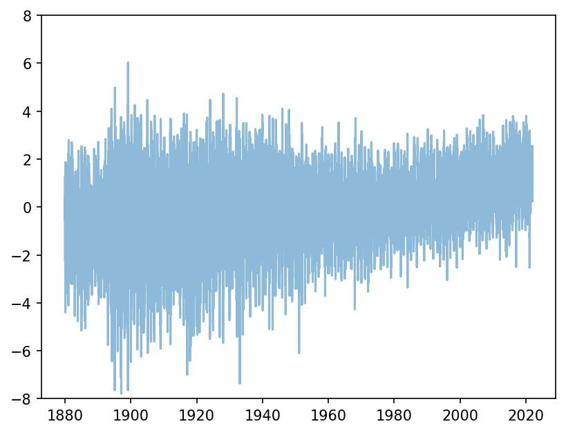
Let’s add a horizontal line at the zero value to highlight the trend shown by the data.
The hlines() function needs a \(y\)-value and starting and ending values for \(x\).
plt.hlines(0, date[0], date[-1], linestyle='--', colors='grey')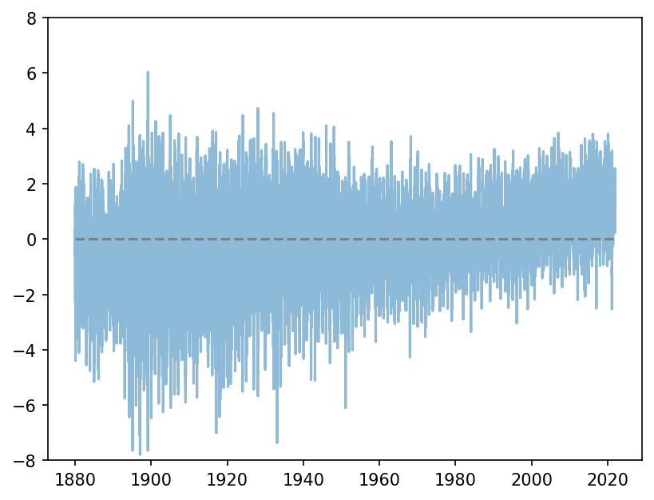
4.2 Styles
Unlike myself, most people (very sensibly) might just want a decent-looking plot without spending time customising it. To facilitate this Matplotlib offers some standard style templates (see here). I am going to use the one called fivethirtyeight.
plt.style.use('fivethirtyeight')This line must be included right at the top!
Et voila! Do you see global warming?!
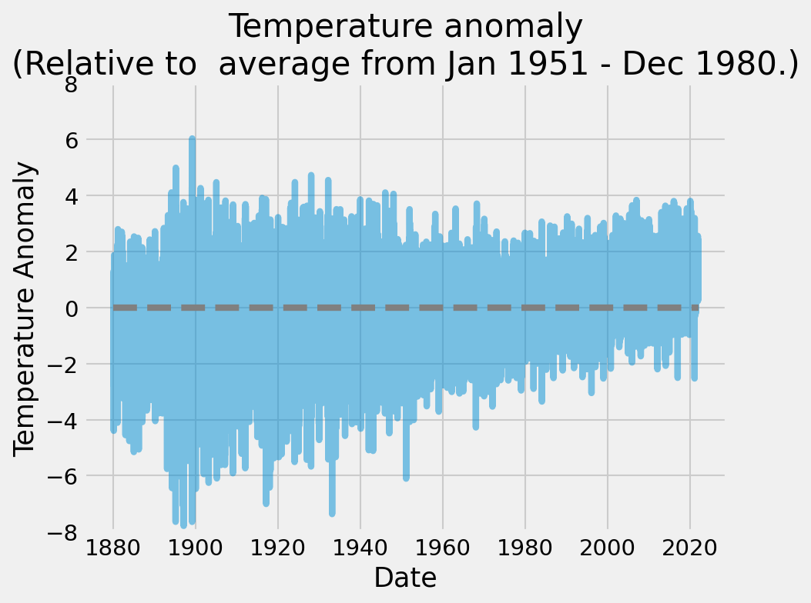
Here is the complete code for the final product.
plt.style.use('fivethirtyeight')
data = np.loadtxt('Complete_TAVG_daily.txt', skiprows=24)
date = data[:, 0]
anomaly = data[:, -1]
plt.plot(date, anomaly, alpha=.5)
plt.hlines(0, date[0], date[-1], linestyle='--', colors='grey')
plt.ylim([-8, 8])
plt.xlabel('Date')
plt.ylabel('Temperature Anomaly')
plt.title('Temperature anomaly\n(Relative to average from Jan 1951 - Dec 1980.)')xkcd!
Okay, since we are talking about styles, I must tell you that the developers of Matplotlib have a healthy sense of humour and have included the option of making your plots in the xkcd style. To enable this, just run plt.xkcd() instead of setting a style. Here is what the previous plot looks like using the xkcd style. Cool!
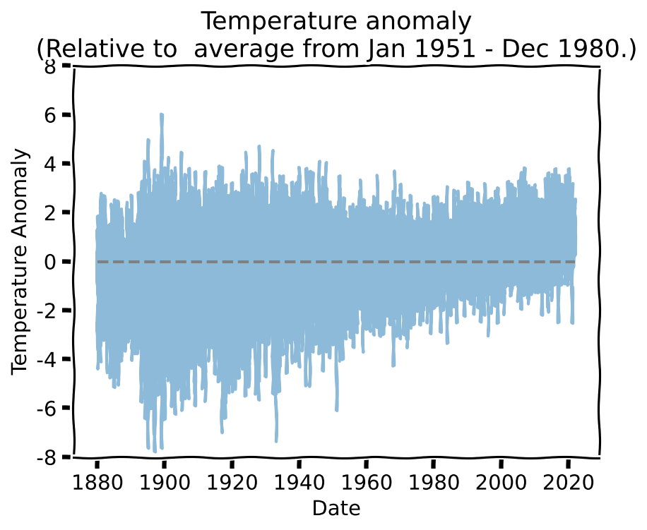
Resetting styles
If you want to reset things and jump out of this style, you need to set the default style using:
plt.style.use('default')